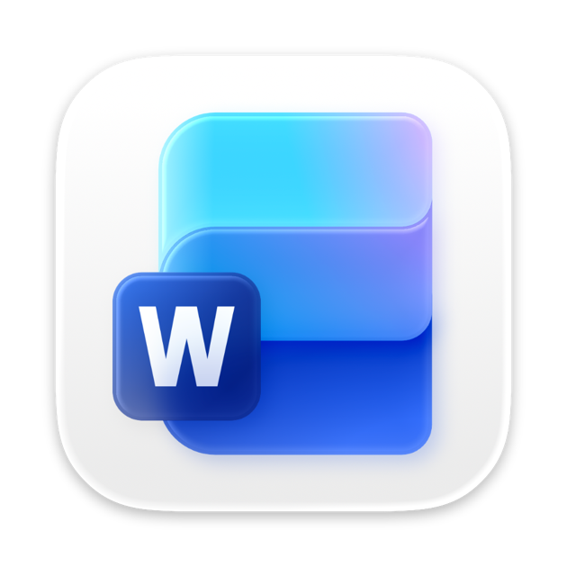

☰
Cursos de Informática Básica Para melhor Idade
Início
Sobre Nós
Nossos Cursos
Contato
CADASTRE-SE
JÁ SOU ALUNO(A)
WORD

Qual programa é usado para escrever textos?
Word
Excel
PowerPoint
Bloco de notas
Qual recurso do Word permite revisar alterações de um documento?
Filtros
Gráficos
Controlar Alterações
Macro
Qual atalho salva rapidamente um documento no Word?
Ctrl + P
Ctrl + S
Ctrl + C
Ctrl + X
Qual recurso permite criar listas numeradas e com marcadores?
Gráficos
Tabelas
Cabeçalhos
Listas
Qual função do Word permite organizar o texto em colunas?
Tabelas
Colunas
Marcadores
Estilos
Como inserir imagens em um documento do Word?
Inserir → Imagem
Formatar → Tabela
Revisão → Ortografia
Layout → Quebra de página
Qual guia contém opções de fontes, tamanhos e cores?
Inserir
Referências
Página Inicial
Revisão
Como adicionar cabeçalhos e rodapés em um documento?
Layout → Quebra de página
Inserir → Cabeçalho/Rodapé
Revisão → Comentário
Arquivo → Salvar Como
Qual recurso permite revisar a ortografia automaticamente?
Tabelas
Listas
Colunas
Verificação ortográfica
Qual atalho copia o texto selecionado?
Ctrl + S
Ctrl + X
Ctrl + C
Ctrl + V
🎉 Fim do Quiz! 🎉